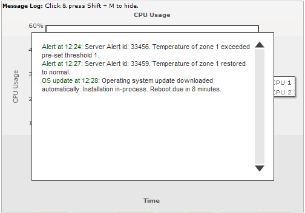

| Message Logger |
|
FusionWidgets v3 introduces a new concept of streaming and showing real-time messages in the chart using Message Logger. The Message logger can be effectively used to show necessary real-time information or live error logs. Essentially, the message logger is a text based scrollable window that can listen to messages streamed from server and then do one of the following:
A simple message logger in a chart looks something as under: |
|  |
All the data streaming charts in FusionWidgets XT can use Message Logger. To aid your understanding of this section, we recommend you to go through the Message Logger section. |